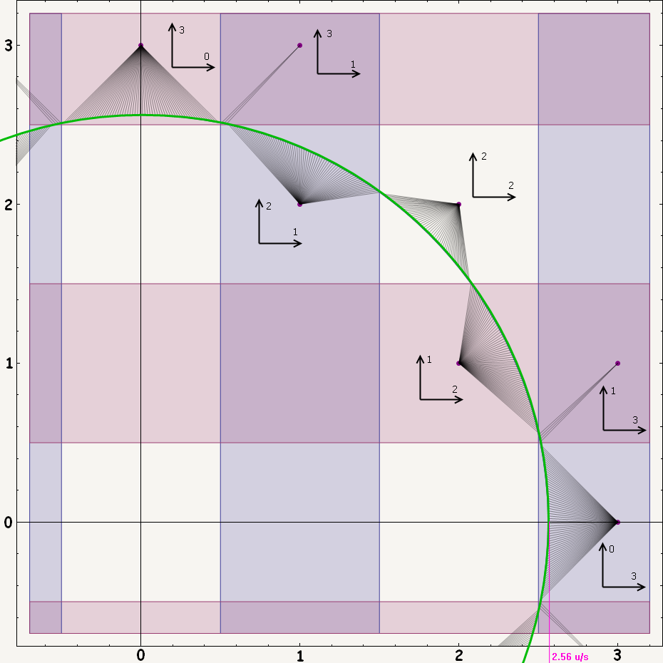

Стрейф является одним из важнейших скиллов в deathmatch и самым важным в дефраге.
Давайте для начала уясним, что собственно из себя представляет стрейф.
Грубо говоря, это возможность набирать скорость в q3.
И, конечно, не надо забывать, что стрейфами называют клавиши, позволяющие двигаться влево-вправо.
Но тема данной статьи именно о первом значении.
Ведь стрефиться можно практически на любой мапе, даже во время триксов с оружием, значительно выигрывая этим во времени, а зачастую такие триксы вовсе невозможны без стрейфа.
Формально говоря, стрейф - это метод разгона в воздухе путём воздействия на вектор скорости под определённым углом, различным для каждой величины вектора скорости.
Воздействовать на вектор скорости возможно благодаря тому, что в движке q3 есть такое понятие, как тяга.
На земле это ускорение 26u/s2, взаимодействующее с трением, различным для разных скоростей; например от 0 до 320 ups трение меняется от 5 до 15u/s2.
(u - unit - единица измерения расстояний в q3)
(ups = units per second = u/s)
В воздухе тяга значительно меньше - 2.56u/s2, однако, благодаря этому ускорению, за 5 хороших прыжков разгона можно набрать скорость ракеты - 900ups, тогда как обычная скорость бега равна 320ups.
Ну и как, спросите вы, творить такие чудеса?=)
Надо стрейфиться, т.е. направлять тягу в зоны разгона.
При 320ups это две четверти круга по 90 градусов по бокам от вектора скорости, т.е. направления вашего движения.
При увеличении скорости зоны сужаются и при 3000-3500ups представляют собой две узкие полоски, находящиеся на перпендикуляре к вектору скорости, т.е. 90` влево и 90` вправо от направления вашего движения.
Угол направления ярко-зелёной части зон рассчитывается по формуле (320/скорость)
Практически набор скорости определяется, как проекция тяги на вектор скорости, т.е. ярко-зелёные зоны наиболее оптимальны для разгона, тёмно-зелёные - менее, а за перпендикуляром к вектору скорости происходит торможение.
Ещё лучше формулировка понятна при просмотре демки 01-01_opc1_forwardkey_only.dm_68
Для полного понимания советую включить нулевой статс (нажатия клавиш), df_accelDraw (это хелпер стрейфа, показывает яркой копией вашего прицела направление взгляда для оптимальной акселерации) и df_hud_cgaz.
Последняя фишка требует пояснений.
Четырёхцветная полоска через весь экран символизирует направления в физике игры.
Стрелка под ней - это направление вектора скорости (белая при положительной скорости по вертикали, золотистая в остальных случаях).
Две узкие ярко-зелёные полоски - это зоны оптимальной акселерации.
Две широкие тёмно-зелёные указывают на остальную часть зон разгона.
Область между ярко-зелёными полосками - это нейтральная зона, разгона не происходит.
Область за жёлтыми полосками - зона деградации, скорость теряется.
Красные блики справа и слева символизируют соответственно величины разгона и торможения.
Элементы этого хада можно включать по отдельности с помощью бит-маски, описание в history.txt, включённом в дефраг с этого сайта.
Демка записана на карте OPC1 - одной из старейших падовых мап; хорошо подходит для тренировки стрейфов начального скилла, хорошие же стрейферы, прыгая в полную силу, просто перелетают пады (интересно посмотреть демку 01-02_opc1_2nd_pad.dm_68, в которой эта карта финализирована аж со второго пада).
Думаю, после просмотра первой записи с рекомендованными статсами вопросов по поводу общей формулировки стрейфа возникнуть не должно.
Однако расчёт акселерации по cos, отображаемый gazhud'ом - это ещё не всё.
Дело в том, что в Q3, в отличие от других игр со стрейфом, скорости по осям округляются каждый фрейм до целого числа (для уменьшения сетевого трафика).
А, так как тяга в воздухе невелика, то этот момент оказывает очень существенное влияние!
Практически при тяге 2.56u/s2 возможен набор 0, 1, 2 или 3 ups по оси, а по двум осям возможны следующие сочетания: (3;0), (3;1), (2;1) и (2;2)

Видно, что интервалы углов тяги относительно игровых осей, при которых получаются одни и те же величины разгона, довольно большие.
Их называют snap-зонами, а явление округления скорости - velocity snapping.
Расположение зон повторяется каждые 45 градусов, следовательно на круг 360' имеем 6*4=24 зоны.
Что же нам даёт это знание на практике?
А то, что для наилучшей акселерации вовсе не обязательно попадать в светло-зелёную зону газхада: в пределах снэпзоны, где она сейчас находится, разгон будет одинаковый.
На большой скорости, когда зона разгона меньше снэпзоны, можно акселить ничуть не хуже, даже целясь в зону торможения!
Для визуализации снэпзон в игре есть snaphud, работающий в движке iodfengine и некоторых сборках dfengine.
Переменные настроек начинаются на iodfe_hud_snap (жмём tab);
iodfe_hud_snap_draw - включение.
Итак, мы рассмотрели, как теоретически работает акселерация в Q3; а какие же есть хорошие, годные методы поразгоняться в игре?
Ведь совершенно очевидно, что способ стрейфов в демке 01-01_opc1_forwardkey_only.dm_68 не является сколь-нибудь удобным, хотя стрейфиться можно как угодно; главное - направлять тягу в зоны разгона, учитывая снэппинг.
Хороший тому пример - 01-03_opc1_fullcircle.dm_68 от не в меру изобретательного перца по имени markus.
Удобных же методов стрейфа существует три вида:
- fullbeat - универсальный способ, хорош практически везде
- halfbeat - хорош для больших скоростей и падовых карт
- inverted strafes - подходит для очень больших скоростей
Рассмотрим для начала фуллбит, как основной метод стрейфа.
Для начала надо набрать скорость на земле (да, на земле тоже можно стрейфиться! она, конечно, является тормозящим фактором, но и тяга в данном случае больше, чем в воздухе).
Это очень важная часть прыжка, т.к. если набрать несколько ups в начале прыжка, то они будут двигать вас на большее расстояние каждый фрейм всё оставшееся его время; а вот если набрать те же самые ups в конце, то они окажут действие только в небольшое оставшееся время и результат будет заметно хуже.
Набор скорости на земле выглядит примерно следующим образом:
Во-первых, надо зажать клавишу вперёд и набрать 320ups - т.е. нормальную скорость бега.
Затем надо зажать одну из кнопок стрейфа (какую - решать вам) и в этот же момент начать плавный поворот в сторону зажатого стрейфа с постоянной скоростью.
Попробуйте покрутиться на месте таким образом, поглядывая на спидометр; рука сама почувствует, какая скорость поворота оптимальна. И при увеличении, и при уменьшении скорости поворота относительно оптимальной, скорость на земле будет уменьшаться.
Посмотреть это можно в начале демки 01-04_opc1_diff_styles.dm_68.
Для начала будет неплохо научиться набирать 370-380ups на земле, 395-400ups - это уже "взрослые" показатели, 400-406ups - элитные; максимальная же возможная скорость на земле, которую можно набрать с места и поддерживать равна 409ups.
Чтобы сделать первый прыжок, надо стать боком к будущему направлению движения, примерно 90-135 градусов к нему, затем разогнаться на земле и за 10`-20` до совпадения взгляда с направлением стрейфов прыгнуть, вместе с тем уменьшив скорость поворота мыши.
Далее стрейфим, направляя взгляд в ту снэпзону, где находится зона оптимального разгона.
Делать это удобно, просто целясь чуть левее/правее зоны оптимального разгона, плавно ведя мышь.
То, что мы сейчас сделали, называется circle jump - сокращённо cj, т.е. одиночный прыжок с разгоном с места.
За мгновение до приземления надо нажать прыжок и резким рывком перейти в другую зону акселерации; вместе с этим движением надо отпустить одну кнопку стрейфа и нажать другую (рывок мышью и смена стрейфов вместе так и называются - смена стрейфов).
Затем опять плавный поворот в зоне разгона.
Чем больше скорость, тем больше становится размах рывка и меньше скорость поворота при акселерации.
Затем опять прыжок со сменой стрейфов, потом ещё и т.д.
Пока не допрыгаетесь:)
Это можно посмотреть в демке 01-04_opc1_diff_styles.dm_68
Что касается нажатия прыжка, то тут чем короче - тем лучше. Горизонтальная составляющая тяги становится меньше при его нажатии, т.к. часть общей тяги уходит в вертикальную, стрейфы соответственно слабее; конечно, тут не стоит излишне усердствовать, поздно нажатый прыжок может стоить вам лишней сотни-другой ups, поэтому надо найти для себя оптимальное время нажатия; при возрастании скилла оно становится меньше.
Чтобы ощутить различие, вносимое нажатым прыжком, предлагаю пробежать короткую карту типа st1, нажимая его минимально и максимально долго. Разница будет очевидна. На практике разгон зачастую прекращается при нажатии прыжка, т.к. зона, где в этих условиях можно акселить, находится существенно правее/левее ярко-зелёной зоны газ-хада.
Про смену стрейфов скажу, что их можно менять, когда захочется.
Хотя, конечно, есть некоторые критерии.
Например, логично менять стрейфы в момент прыжка, пока горизонтальная тяга ослабевает из-за его нажатия.
Также стоит принимать во внимание снэппинг.
Для фулбита снэпхад будет автоматически показывать зоны сдвинутыми на 45 градусов, ведь направление тяги отстоит на столько относительно направления взгляда в данном случае. Т.е. можно без задней мысли в него целиться; принцип снэппинга не меняется.
Здесь показаны возможные наборы скорости по осям для текущего нажатия клавиш; для нажатия в другую сторону числа на осях поменяются местами.
Практический толк из этого знания в том, что, зная необходимое направление движения, можно выбирать снэпзоны, где набирается побольше ups именно в этом направлении. Также можно определить целесообразность смены стрейфов в том или ином случае.
Например, в течение первых двух прыжков обычно можно менять стрейфы реже, чем раз за прыжок. В конце демки >01-04_opc1_diff_styles.dm_68 показаны пару широко используемых способов.
Один со сменой стрейфов в начале первого и в середине второго прыжков (смену стрейфов в воздухе, а не при приземлении называют airchange).
Другой со сменой только в середине второго; это стиль, кстати, очень удобен для сложных падовых карт, т.к. прирост фронтальной скорости получается максимальным благодаря использованию снэпзоны (2;2).
01-05_cos1_white_howto.dm_68 - данный способ показан с паузами для более-менее сложной стрейфовой дорожки.
01-06_cos1_white_fullbeat.dm_68 - тот же способ и чуть более сложная дорожка; обычная демка без пауз.
Карта cos1_beta7b - последняя на данный момент версия мапы одной из самой старой серии fs (freestyle) карт.
Немного о скоростях прыжков (имеются в виду скорости во время приземления после прыжка).
Сначала может получаться что-то вроде 490-580-660; это уже нормально.
Если прыгаете 520-610-700, то вам уже многое по плечу.
540-650-750 и выше - это элитные значения.
Надо сказать, что не стоит сильно фокусироваться на этих значениях, т.к. это скорость по горизонтали, посчитанная для удобства восприятия.
Фактически же скорость хранится и рассчитывается отдельно по осям - именно эти значения важны и показательны.
И ещё маленькое замечание о том, что направление взгляда по вертикали не оказывает никакого влияния на стрейфы; можно хоть в потолок смотреть, если вам так нравится=)
Просто кому-то может быть удобно менять ещё и угол по вертикали.
Между прочим, вид оружия, который вы несёте в руках, влияет только на то, что случится, когда вы нажмёте кнопку выстрела; на всё остальное это не оказывает никакого воздействия.
С фуллбитом разобрались, теперь посмотрим альтернативные методы.
Основан на том, что после третьего-четвёртого прыжка при смене стрейфов приходится поворачивать мышь более чем на 45`, а следовательно, удобно заменить нажатие "вперёд+стрейф" на один только стрейф; в этом случае поворачивать надо будет на целых 45` меньше.
В остальном принципы такие же, как и при фуллбите.
01-04_opc1_diff_styles.dm_68 - здесь этот способ показан после фуллбита - cj на старте, потом халфбит.
01-07_cos1_white_halfbeat.dm_68 - тут показано использование халфбита после трёх прыжков обычным стрейфом.
01-07_cos1_white_halfbeat[2].dm_68 - а тут вариант использования сразу после cj.
Небольшой недостаток халфбита заключается в том, что разгон одной кнопкой менее эффективен при нажатом прыжке, чем двумя (тяга в q3 у игрока одна для всех осей, и, зажав две кнопки, мы направляем побольше в горизонтальную). Для сравнения горизонтальная тяга при фуллбите с зажатым прыжком равна 2.09u/s2, а для одиночного нажатия при халфбите 1.81u/s2; понятно, что зоны разгона и снэпзоны будут выглядеть соответственно этим тягам.
Тут разгон производится с использованием одних только кнопок стрейфа.
На небольших скоростях не очень хорош, а на больших и огромных неудобство (в том, что рывок совершается в одну сторону, а поворот для акселерации в другую) вполне окупается предельно маленьким углом поворота при смене стрейфов.
Смотрим 01-04_opc1_diff_styles.dm_68 после халфбита и 01-08_cos1_white_inverted.dm_68
Среди удобных способов стрейфа есть ещё один - wallstrafe.
Идея в том, что стена не даёт изменить направление скорости, а стрейфиться можно, как обычно.
В результате требуется меньше движений мышью - траектория движения становится прямой.
Максимальная скорость на земле для такого способа равна 401ups и достигается при направлении тяги под углом в 39.5 градуса к стене; можно достичь это кнопкой вперёд, например, но удобнее вперёд+стрейф - в этом случае угол направления взгляда будет 5.5`.
После старта стрейфим. Предел поворота будет примерно на 33.5 градусов в снэпзоне (1;3); при этом угле таким способом можно стрейфиться до скорости 1625ups. Больше данным методом на обычных стенах, расположенных вдоль осей игрового мира, не набрать, т.к. следующая зона будет (0;3), т.е. без возможности набора фронтальной скорости.
01-09_opc1_wallstrafes.dm_68 - пример этого способа стрейфа.
01-10_q3dm6_somewallstrafes.dm_68 - пара одиночных прыжков этим методом.
С теорией и методами стрейфов на этом всё; рассмотрим пару вопросов, связанных с темой статьи, которые могут быть интересны.
________________________________________________________________________________________________________________________________________________________________________________________
Итак, поехали дальше.
Вполне естественно, что можно нажать клавишу "назад" и притормозить, это бывает иногда нужно. Например, для экстренного торможения на земле это и есть наилучший метод (без приседания, как многие инстинктивно пытаются делать).
Более интересный приём - экстренный поворот; при нормальных стрейфах вы и так поворачиваете, изменяете направление движения, т.к. набираете боковую скорость.
Если же повернуть мышь в снэпзону, следующую за оптимальной или ещё дальше, то вы увеличите набор боковой скорости, это бывает необходимо.
Хм, я сейчас подумал, что если посмотреть сверху на траекторию прыжков по падам, то она должна быть похожа на синусоиду=))
Проверил:) Действительно, есть некоторое сходство.
Зона торможения может быть полезна и в следующем варианте: прыгаете вы, скажем, по падам и видите, что ещё пара прыжков и вы перелетите за край пада.
Тут есть несколько решений; можно медленнее делать рывок мышью, чтобы потерять часть возможного ускорения; можно кратковременно отпускать кнопки, которыми вы стрейфитесь - с тем же результатом; этот способ хорош тем, что вы будете двигать мышью автоматически, как если бы вам и не надо было недобрать немного скорости, и поэтому вряд ли испортите дальнейшие прыжки, сделанные в полную силу. И последний вариант - кратковременно отпускать кнопку "вперёд" при фуллбите; метод хорош простотой и тем, что так вы будете притормаживать, делая возможными последующие сильные прыжки.
Это понятие имеет два значения; первое - преобразование горизонтальной скорости в вертикальную при попадании на рампу - наклонную поверхность. В vq3 это явление слабо выражено и работает прилично, если поверхность покрыта "льдом" - текстурой slick, или на рампе был пойман овербаунс.
Интересует же нас второе значение - зашагивание игрока на поверхность, расположенную выше его.
Наверное, вы уже успели заметить, что при прыжке на пад "внатяжку" игрока как бы подбрасывает при приземлении. Это как раз и есть данное явление.
Происходит так потому, что игрок может зашагивать на поверхность, которая находится на 18 и менее юнитов выше его. Это позволяет ходить по ступенькам.
Это же является причиной, по которой нельзя измерять ширину пропасти скоростью, которую понадобилось набрать, чтобы её перепрыгнуть. Ведь можно начать прыжок не с самого края и благодаря рампингу зашагнуть при приземлении - а за счёт этого прыжок становится дольше на 8-9% (максимум на 64ms) - достаточное время, чтобы набрать с десяток "бонусных" ups.
Поэтому же не стоит сравнивать скорости прыжков на падах с прыжками на плоской поверхности; на падах в этом плане, несомненно, есть преимущество.
И именно поэтому нельзя измерять ширину пропасти статсом для измерения длины прыжка; он показывает лишь физическое перемещение модели игрока за время нахождения в воздухе, и лучший результат здесь получится при старте как можно более дальнем от края платформы.
Скорость при вылете из телепорта равна 400ups и уже одно это делает нелогичными выход из него, а потом разгон с помощью cj.
К тому же после телепортации на 150 миллисекунд включается физика слика (льда) и можно набрать сверх 400ups уже на земле.
Слик, кстати, физически идентичен нахождению в воздухе, т.е. трение отсутствует, а тяга равна 2.56u/s2.
Для расположенного прямо на земле выхода из телепорта метод следующий:
При входе в телепорт надо зажать вперёд+стрейф; после выхода пауза в несколько фреймов, после неё резкий поворот в сторону стрейфа, потом прыжок и смена направления стрейфа для того, чтобы сделать траекторию движения ровнее.
Так можно набрать около 430 с лишним ups уже на земле.
Достаточно выгодный приём, и поэтому довольно часто применяется на дф-мапах, к тому же выход из телепорта может давать невысокий овербаунс; было бы странно не использовать получаемую от него скорость.
Как пример прыжков из телепорта с расположенным на земле выходом, можно посмотреть любую демку за время меньше 11 секунд на карте fdsj2. 01-11_fdsj2_10.552.dm_68
Вообще, прыжки такого рода требуют некоторой реакции и улучшаются с набором опыта.
Надо почувствовать оптимальное время нахождения на земле; если слишком долго на ней находиться, то можно потерять в скорости. Если же прыгнуть слишком рано, то не успеешь её набрать.
Что касается выхода, расположенного в воздухе, то с ним обращаться проще.
Так же влетаем в телепорт, а после паузы стрейфимся; при подходе к земле нажимаем прыжок.
Конечно, и в этом случае не надо забывать про смену стрейфов; траектория при начальном разгоне значительно искривляется, и поэтому надо менять направление стрейфов с таким расчётом, чтобы первый прыжок получался достаточно ровным.
Для примера можно посмотреть любую демку на карте lick-dead за время меньшее 27.2.
01-12_lick-dead_26.272.dm_68
- Время прыжка = 720msec = 90 фреймов
- Вертикальная скорость отрыва = скорости приземления = 264ups (ось Z)
- Ускорение свободного падения = 6u/s2
- Высота прыжка = 48.528u
- Скорость бега = 320ups, тяга 26u/s2, тяга в воздухе вдоль оси 3u/s2, лимит набора в воздухе 320ups
- Скорость ходьбы = 160ups, тяга 13u/s2, тяга в воздухе вдоль оси 1u/s2, лимит набора в воздухе 160ups
- Скорость в пригнутом состоянии = 80ups, тяга 7u/s2, тяга в воздухе вдоль оси 2u/s2, лимит набора в воздухе 226ups
Модификатор haste (speed) увеличивает наземную тягу до 33u/s2, в воздухе до 3.328u/s2, скорость бега до 416ups.
Снэпзоны для фулбита в результате выглядят так:
Немного о разделении типов стрейфов.
Основных типа два: падовые и ctf.
Первый по сути довольно скучный, стрейф по прямой, большие скорости, однако наличие разнообразных связок на картах такой направленности делает часть из них довольно интересными.
Прообразом ctf стрейфов являются обычные игровые, сами же они являются категорией в ctf и представляют собой связки серий из нескольких прыжков; здесь решают сильные начальные прыжки и умение быстро развернуться на земле для изменения направления движения, сохранив при этом максимум скорости.
Много и не-ctf карт, целиком или частично состоящих из триксов с такими стрейфами.
Демки, которые будет полезно посмотреть:
01-13_q3dm17_hardstrafe.dm_68 - очень сложный прыжок на dm17, что-то вроде теста на скилльность ваших стрейфов.
01-14_q3dm6_base_strafes.dm_68 - базовые стрейфы на dm6, которые должен уметь любой уважающий себя игрок в deathmatch, не говоря уже о дефрагерах.
01-15_q3t4_base_strafes.dm_68 - то же на tourney4.